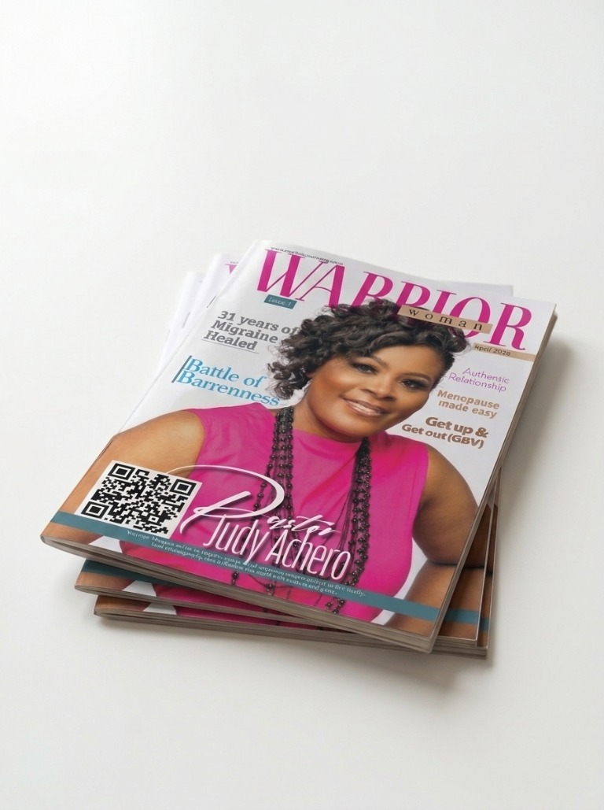

The Rise of the Warrior Woman
An editor's note on the conviction, faith and purpose at the heart of Warrior Woman Magazine.
Read the articleExplore testimonies, practical wisdom and encouraging stories from the pages of Warrior Woman Magazine.
18 stories from Issue 1, dated from 1 April to 1 November 2026. Advertising-only pages are not included. Open any story to read the full article.

An editor's note on the conviction, faith and purpose at the heart of Warrior Woman Magazine.
Read the articleA portrait of Lady Bishop Kathy Kiuna and a life shaped by resilience, faith and fearless purpose.
Read the articleA look at Reverend Kathy Kiuna?s ministry, leadership and the vision behind her work.
Read the articlePastor Judy Achero shares her personal journey from a career as a chartered accountant to full-time ministry.
Read the articleAn encouragement to carry faith, conviction and purpose into professional life.
Read the articleA founder spotlight celebrating faith, creative vision and bold leadership.
Read the article
A reflection on serving others with professionalism, integrity and purpose.
Read the articleAn exploration of genuine friendship, encouragement and relationships rooted in faith.
Read the article
A practical, health-focused conversation about understanding and navigating menopause.
Read the articleA journey from corporate life toward a faith-led assignment and a new sense of purpose.
Read the articlePastor Judy Achero shares a deeply personal journey through waiting, faith and hope.
Read the articleA testimony of grace, resilience and a life transformed by faith.
Read the articleA survivor story and an appeal to speak up and seek safety from gender-based violence.
Read the articleA story of overcoming hardship, abuse and painful beginnings to find renewed hope.
Read the articleA reflection on culture, faith and wisdom in the choices women make today.
Read the articleDr Alcy Tivane reflects on music, ministry and the sustaining presence of grace.
Read the article
Highlights from the Warrior Women community walking together in Sandton.
Read the articleExplore the complete Warrior Woman Magazine Issue 1.